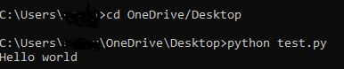
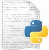
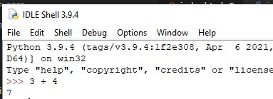
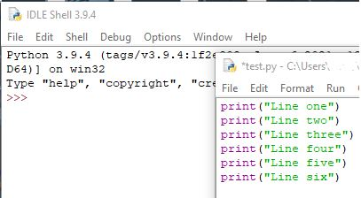
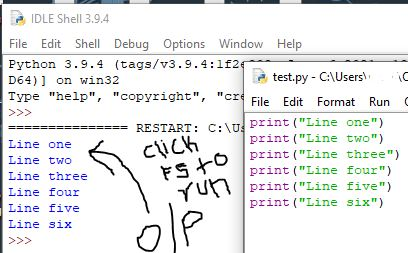

- 1.Introduction
- 2. Variables
- 3.Data types
- 4.Operators
- 5.Conditional_stmts
- 6.I/O_Operations
- 7.Iterative_stmts
- 8.Functions
- 8.1.Arguments
- 9.Sequences
- 10.Modules
- 11.Oops_Introduction
- 11.1.Methods
- 11.2.Inheritance
- 11.3.Polymorphism
- 11.5.Encapsulation
- 12.lambdas
- 13.Exception_Handling
- 14.File_Handling
- 15.Multi_Threading
- 16.Iterators_generators
- 17.Database_Management
History of python:
Python was conceived in the late 1980s by Guido van Rossum at Centrum Wiskunde & Informatica (CWI) in the Netherlands as a successor to ABC programming language, which was inspired by SETL, capable of exception handling and interfacing with the Amoeba operating system. Its implementation began in December 1989
Logo of python:

Features of python:
1. Easy to code:
Python is a high-level programming language. Python is very easy to learn the language as compared to other languages like C, C#, Javascript, Java, etc. It is very easy to code in python language and anybody can learn python basics in a few hours or days. It is also a developer-friendly language.
2.Free and Open Source:
Python language is freely available at the official website and you can download it.Since it is open-source, this means that source code is also available to the public. So you can download it as, use it as well as share it.
3.Object-Oriented Language:
One of the key features of python is Object-Oriented programming. Python supports object-oriented language and concepts of classes, objects encapsulation, etc.
4.GUI Programming Support:
Graphical User interfaces can be made using a module such as PyQt5, PyQt4, wxPython, or Tk in python.
PyQt5 is the most popular option for creating graphical apps with Python.
5. High-Level Language:
Python is a high-level language. When we write programs in python, we do not need to remember the system architecture, nor do we need to manage the memory.
6.Extensible feature:
Python is a Extensible language. We can write us some Python code into C or C++ language and also we can compile that code in C/C++ language.
7.Python is Portable language:
Python language is also a portable language. For example, if we have python code for windows and if we want to run this code on other platforms such as Linux, Unix, and Mac then we do not need to change it, we can run this code on any platform.
8. Python is Integrated language:
Python is also an Integrated language because we can easily integrated python with other languages like c, c++, etc.
9. Interpreted Language:
Python is an Interpreted Language because Python code is executed line by line at a time. like other languages C, C++, Java, etc. there is no need to compile python code this makes it easier to debug our code. The source code of python is converted into an immediate form called bytecode.
10. Large Standard Library
Python has a large standard library which provides a rich set of module and functions so you do not have to write your own code for every single thing. There are many libraries present in python for such as regular expressions, unit-testing, web browsers, etc.
11. Dynamically Typed Language:
Python is a dynamically-typed language. That means the type (for example- int, double, long, etc.) for a variable is decided at run time not in advance because of this feature we don’t need to specify the type of variable.
Installation of python
Install python
while installing it is recommended to add python to path by ticking the check box

Running python file:
Method 1 :
1)Write the whole code in text editor(like notepad, sublime text...etc).
2)Save it with .py extension.
3)Open command prompt/Terminal.
4)Using cd, you can open the path where the python file is present.
Synatx for running a python file:
python name_of_file.py
Example: I have a file with the name test.py on my desktop and I want to execute it.

Method 2:
1)Use idle giving by python.
2)Go to search and type idle, you'll find python's default idle.

3)For single statement programs, you can run on shell.

4)For set of statemets to execute at a time write them in idle to open idle, click on File > New File.
5)Python's default idle is opened, type in the code and save the code at your workspace.

6)To run the script, you can hit F5 or click on Run > RunModule.The output appears on the console.

Note: copy, pasting of programs from this site might result in error as some special html characters are used to show indentation.Instead you can type the program looking at the site.